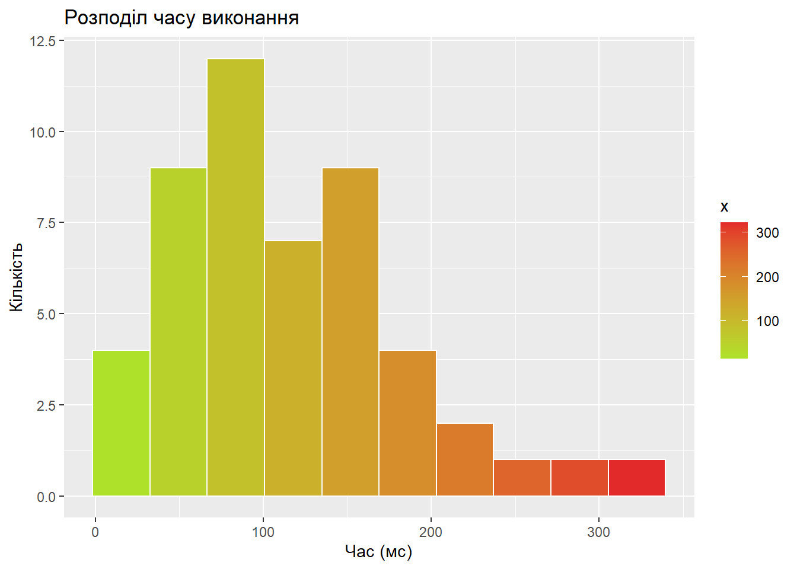
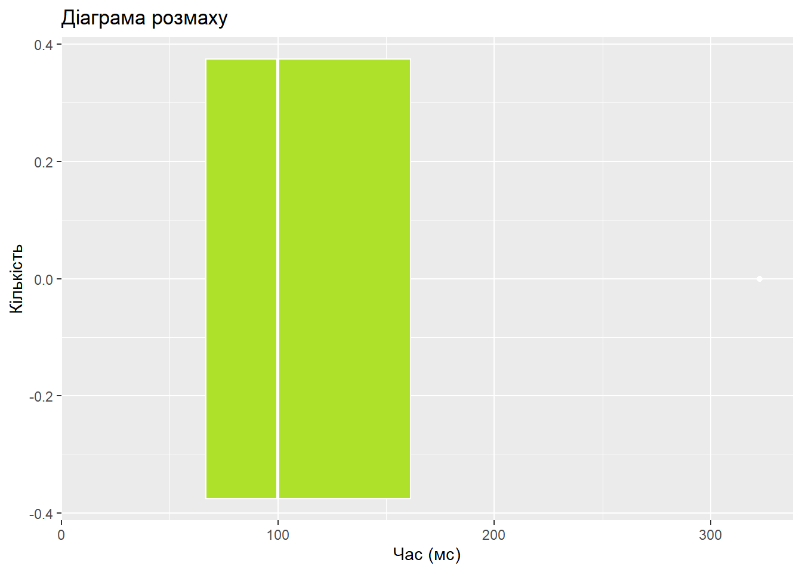

Code
set.seed(1)
sql_vec <- round(rlnorm(50, meanlog = 4.5, sdlog = 0.8), 2)
head(sql_vec)[1] 54.53 104.26 46.13 322.54 117.17 46.69Мета роботи: сформувати початкові практичні навички роботи з мовою програмування R як спеціалізованим інструментом статистичної обробки інформації, навчитися виконувати базові обчислення, створювати вектори й таблиці даних, обчислювати описові статистики та будувати найпростіші графіки.
Для свого варіанта необхідно:
set.seed(1)
sql_vec <- round(rlnorm(50, meanlog = 4.5, sdlog = 0.8), 2)
head(sql_vec)[1] 54.53 104.26 46.13 322.54 117.17 46.69sql_frame <- data.frame(
query_id = 1:length(sql_vec),
time_ms = sql_vec
)
knitr::kable(
head(sql_frame),
align = "l",
caption = "Час виконання SQL запиту (мс)"
)| query_id | time_ms |
|---|---|
| 1 | 54.53 |
| 2 | 104.26 |
| 3 | 46.13 |
| 4 | 322.54 |
| 5 | 117.17 |
| 6 | 46.69 |
summary(sql_frame) query_id time_ms
Min. : 1.00 Min. : 15.31
1st Qu.:13.25 1st Qu.: 66.88
Median :25.50 Median : 99.91
Mean :25.50 Mean :117.84
3rd Qu.:37.75 3rd Qu.:161.18
Max. :50.00 Max. :322.54 var(sql_frame$time_ms)[1] 4838.986sd(sql_frame$time_ms)[1] 69.56282ggplot(data = sql_frame, aes(x = time_ms, fill = after_stat(x))) +
geom_histogram(bins = 10, color = "white") +
scale_fill_gradient(
low = "#aee22a",
high = "#e22a2a"
) +
labs(
title = "Розподіл часу виконання",
x = "Час (мс)",
y = "Кількість"
)
ggplot(data = sql_frame, aes(x = time_ms)) +
geom_boxplot(fill = "#aee22a", color = "white") +
labs(
title = "Діаграма розмаху",
x = "Час (мс)",
y = "Кількість",
)
На основі розрахованих описових статистик встановлено, що розподіл досліджуваної величини має правосторонню (позитивну) асиметрію, оскільки середнє арифметичне значення (\(117{,}84\)) помітно перевищує медіану (\(99{,}91\)). Більша частина спостережень зосереджена в діапазоні між першим та третім квартилями (від \(66{,}88\) до \(161{,}18\)), тоді як максимальне значення сягає \(322{,}54\), що вказує на наявність суттєвих правосторонніх сплесків. Через чутливість середнього арифметичного до подібних екстремальних відхилень найбільш репрезентативною оцінкою типового значення виступає медіана. Дані демонструють значну варіативність із широким розмахом коливань від мінімуму \(15{,}31\) до максимуму \(322{,}54\).